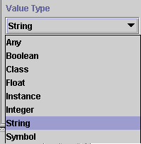
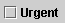
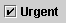
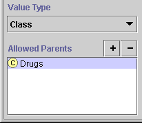
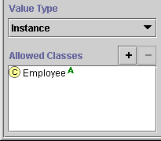
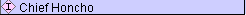
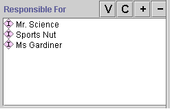
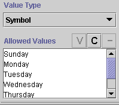
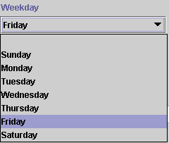

The Value Type menu in the Slot Form allows you to select the slot type, which determines the kind of values that the slot may hold. When a value type of Class, Instance, or Symbol is selected, an additional pane appears below the Value Type menu.

When you are creating instances for a slot, the slot type also determines how the slot is displayed in the Instances Form. See the Standard Widgets for more information about instances and type.
A value type of Any means the slot can take any one of the other values: Boolean, Class, Float, Instance, Integer, String, or Symbol. If a class inherits a slot of type Any, then the slot may be modified by restricting it to a specific one of the other types. This is the only case where the actual value type of an inherited slot can be changed.
Any allows you to create a generic slot for a high-level class and then determine the actual value type at a lower level. For example, suppose you are modeling a taxonomy for all the vertebrates in an ecosystem, with specific species as the instances. You could create the slot Diet at the Vertebrate class level. Then for the subclass Carnivore, you could restrict the Diet slot to type Instance, so that you could select specific species already in your taxonomy as the diet. On the other hand, for the subclass Herbivore, you could restrict the Diet slot to type Symbol and list possible food plants by name.
A class with a slot of type Any cannot have instances.
A Boolean slot can holds a logical Boolean value, that is, a value that is either true or false. An instance of a class with a Boolean slot displays the slot as a checkbox. For example, the Personals_Ad class contains the Boolean slot Urgent; the Silly instance of Personals_Ad is not Urgent, while the M137 instance is:
|  | not Urgent |
|  | Urgent |
A slot of type Class has classes as values. More specifically, when Class is selected as the value type, the Allowed Parents pane is displayed. A slot or an instance then takes one of these classes or any of their subclasses as the value(s) of the slot.

For example, suppose you have created a knowledge base which includes, among other information:
You can create the slot medications in the class Patients and make it of type Class, with Drugs as the Allowed Parents. Then when a user creates an instance, they can choose the medications from the list of prescription drugs that appear as subclasses of Drugs.
Buttons at the top of the Allowed Parents pane let you add and remove classes from the list of allowed parents for a slot of type Class.
To add allowed parents for a slot of type Class:
Click the Add  button
at the top of the Allowed Parents pane. A Select Classes
window shows the list of classes in your knowledge base, in the usual
subclass hierarchy.
button
at the top of the Allowed Parents pane. A Select Classes
window shows the list of classes in your knowledge base, in the usual
subclass hierarchy.
Select one or more classes. To highlight multiple classes, hold down the Ctrl key while clicking each class. To highlight a range of classes, click the first class, then hold down the Shift key and click the last class in the range.
Click OK.
To remove a superclass from the list of allowed parents for a slot of type Class:
Select the classes to remove. To highlight multiple classes, hold down the Ctrl key while clicking each class. To highlight a range of classes, click the first class, then hold down the Shift key and click the last class in the range.
Click the Remove  button at the top of the Allowed Parents pane.
button at the top of the Allowed Parents pane.
A slot of type Float has numbers as values; these numbers may include a decimal point. Values of type Float are stored on your system as floating point values, and are only as accurate as your system.
When entering a Float value for an instance, you can use decimal point or exponential representation. You can enter positive and negative values. For example:
| Representation | Description |
| 1234.56 | Standard decimal notation. |
| 1.23456E3 | Exponential notation, shorthand for 1.23456 · 103. Represents 1234.56 |
| -1234.56 | Negative number. |
| 1.23456E-3 | Exponential notation with a negative exponent, shorthand for 1.23456 · 10-3. Represents 0.00123456. |
For convenience in typing, users can enter a lower case e instead of an uppercase E.
For slots of type Float, you can also enter a Minimum and/or Maximum value. See The Slot Form for more information.
A slot of type Instance has instances as values. More specifically, when Instance is selected as the value type, the Allowed Classes pane is displayed. An instance of the class with this slot then takes instances of the allowed classes or their subclasses as the value(s) of the slot.

In the Newspaper example, the slot responsible_for in the class Editor takes instances of the class Employee as values. The instance Chief_Honcho is responsible for three instances which are descended from Employee: Mr. Science, Sports Nut, and Ms Gardiner.


Buttons at the top right of the Allowed Classes pane let you add and remove classes from the list of allowed classes for a slot of type Instance.
To add allowed classes for a slot of type Instance:
Click the Add  button
at the top of the Allowed Classes pane. A Select Instances window
shows the list of classes in your knowledge base, in the usual subclass
hierarchy.
button
at the top of the Allowed Classes pane. A Select Instances window
shows the list of classes in your knowledge base, in the usual subclass
hierarchy.
Select one or more classes. To highlight multiple classes, hold down the Ctrl key while clicking each class. To highlight a range of classes, click the first class, then hold down the Shift key and click the last class in the range.
Click OK.
To remove a class from the list of allowed classes for a slot of type Instance:
Select the classes to remove. To highlight multiple classes, hold down the Ctrl key while clicking each class. To highlight a range of classes, click the first class, then hold down the Shift key and click the last class in the range.
Click the Remove  button at the top of the Allowed Classes pane.
button at the top of the Allowed Classes pane.
A slot of type Integer has numbers as values for an instance; these numbers cannot include a decimal point. Values of type Integer are stored on your system as integer values. You can enter positive and negative values.
For slots of type Integer, you can also enter a Minimum and/or Maximum value. See The Slot Form for more information.
A slot of type String has text strings as values. You can enter ASCII characters for an instance, including upper and lowercase letters, numbers, the basic symbols on the keyboard, such as !, _, and %. String values can also include spaces.
A slot of type Symbol allows you to create a pre-set list of strings; an instance of a class chooses from among these strings. More specifically, when Symbol is selected as the value type, the Allowed Values pane is displayed. An instance then takes string(s) from among the allowed values as the value(s) of the slot.

For example, the weekday slot at the class Prototype_Newspaper allows you to choose from among the seven days of the week: Sunday, Monday, Tuesday, Wednesday, Thursday, Friday, Saturday, and Sunday. Then an instance has a pop-up menu that allows a user to choose one of the symbol values for the slot:

Buttons at the top right of the Allowed Values pane let you add, edit, and remove values from the list of allowed values for a slot of type Symbol.
To add a value to the list of available values for a slot:
Click the Create  button at the top of the Allowed Values pane.
button at the top of the Allowed Values pane.
Type the string you want in the Create Symbol window. You can enter ASCII characters, including upper and lowercase letters, numbers, and other common characters, such as !, _, and %.
Click OK.
To edit a pre-existing value:
Click the View  button
at the top of the Allowed Values pane.
button
at the top of the Allowed Values pane.
Edit the string in the Edit Symbol window.
Click OK.
To remove a value from the list of values:
Select the values to remove. To highlight multiple values, hold down the Ctrl key while clicking each value. To highlight a range of values, click the first value, then hold down the Shift key and click the last value in the range.
Click the Remove  button at the top of the Allowed Values pane.
button at the top of the Allowed Values pane.
Next: Creating a Slot